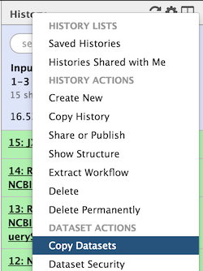

We are now entering into real analyses using Metavisitor. These analyses as well as their biological context are presented as Use Cases in the metavisitor article. We invite readers of this manual to refer to this article if they need to better understand the biological context of the described procedures.
In this section, we are going to create step by step a Galaxy history that contains the input data required to run the workflows for Use Cases 1-1, 1-2, 1-3 and 1-4.
Detection of known viruses
Using small RNA sequencing libraries SRP013822 (EBI ENA) and Metavisitor workflows, we are going to reconstruct Nora virus genomes.
-
Workflow for Use Case 1-1:
Takes the raw reads and collapses them into unique sequences to reconstruct a Nora virus genome referred to as Nora_MV
-
Workflow for Use Case 1-2:
Takes raw reads and reconstructs a Nora_raw_reads genome
-
Workflow for Use Case 1-3:
Takes raw reads, normalizes the abundances and reconstructs a Nora_Median-Norm-reads genome
In order to show Metavisitor's ability to detect multiple known viruses we'll use an other workflow with SRP013822 sequences.
-
Workflow for Use Case 1-4:
Takes raw reads, assembles contigs and aligns them against vir2
History with input data for Use Cases 1-1, 1-2, 1-3 and 1-4
- Create a new history and rename it "Input data for Use Cases 1-1, 1-2, 1-3 and 1-4"
-
Get SRP013822 datasets list
-
Use the the tool
Upload Fileand click on thePaste/Fetch databuttonCopy - Paste the following text (not including the header):
SRR id SRR515090 SRR513993 SRR513992 SRR513990 SRR513989 SRR513981 SRR513901 -
Edit the file name by clicking the "Name" section and writing "use_case_1_accessions" or by selecting the
Startbutton and changing the file name. - Import SRP013822 datasets
- Use the tool
Extract reads in FASTQ/A format from NCBI SRAand select in theselect input typelistList of SRA accession, one per line. - Select in the
sra accession listtheuse_case_1_accessionsfile and run the tool. - Rename a dataset collection SRP013822
- Click on the
Single-end data (fastqdump)collection - Click on the title "Single-end data (fastqdump)" and rename it "SRP013822"
- You can delete the
Pair-end data (fastq-dump)collection by clicking theXbutton and selecting "Collection Only".
-
-
Copy the vir2 blast nucleotide database that we prepared earlier in the Reference history.
- To do so, click on the little wheel icon in the history top menu (in the history right bar).

- Select "Copy Datasets"
- In the open page, select "References" in the Source History menu, check the "nucleotide vir2 blast database" dataset; select "Input data for Use Case 1_1, ..."; and click the "Copy History Items".
- If you refresh the history, you will see the "nucleotide vir2 blast database" dataset showing up.
That is all for the moment. We will latter add datasets in the history Input data for Use Cases 1-1, 1-2, 1-3 and 1-4. However, these datasets do no exist yet: this will be produced by the Use Cases 1-1, 1-2, 1-3 workflows !